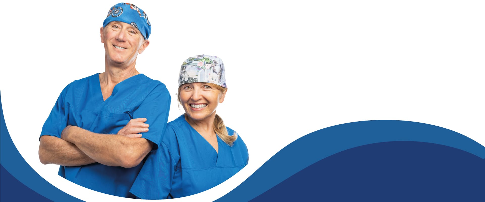

Lo Studio Dentistico Fiori di Castelnuovo di Garfagnana vanta oltre trent'anni di esperienza in implantologia avanzata. Utilizziamo tecniche all'avanguardia per garantire risultati duraturi e naturali, con impianti di ultima generazione che si integrano perfettamente con l'osso mascellare. Il nostro approccio minimamente invasivo riduce i tempi di recupero e garantisce il massimo comfort durante e dopo l'intervento.
Con 30 anni di esperienza nell'analisi e correzione degli squilibri posturali correlati alla masticazione, il nostro studio dentistico a Castelnuovo di Garfagnana è leader in Garfagnana nella posturologia odontoiatrica. Trattiamo con successo problemi di mal di schiena, cervicalgia e cefalea derivanti da malocclusioni dentali, utilizzando tecnologie avanzate per diagnosi precise e terapie personalizzate.
Siamo uno dei pochi studi dentistici in provincia di Lucca ad offrire trattamenti di agopuntura medica certificata. La Dott.ssa Bonini ha completato una formazione triennale con tirocinio ospedaliero, garantendo trattamenti sicuri ed efficaci per dolori cronici, ansia e stress. L'agopuntura si integra perfettamente con le cure odontoiatriche per un approccio olistico alla salute.
Il nostro studio dentistico a Castelnuovo di Garfagnana è specializzato in sedazione cosciente con protossido d'azoto, ideale per pazienti ansiosi, bambini e persone con riflesso del vomito accentuato. Questa tecnica sicura e non invasiva permette di affrontare le cure dentali in totale serenità, mantenendo il paziente rilassato ma vigile durante tutto il trattamento.
Lo Studio Dentistico Fiori è una delle piattaforme autorizzate per la terapia Kyminasi Diet. Questo innovativo approccio metabolico, guidato dalla Dott.ssa Bonini, combina una dieta equilibrata personalizzata con un dispositivo medico brevettato per riprogrammare il metabolismo, garantendo una perdita di peso rapida, duratura e salutare.
Il nostro studio dentistico a Castelnuovo di Garfagnana offre una gamma completa di servizi odontoiatrici, dalle cure conservative alla chirurgia implantare avanzata. Ogni trattamento viene eseguito con tecnologie all'avanguardia e materiali di prima qualità, garantendo risultati eccellenti e duraturi per tutti i pazienti della Garfagnana e della provincia di Lucca.
Otturazioni estetiche con tecniche mini-invasive e materiali biocompatibili di ultima generazione
Cura delle gengive con tecniche rigenerative e laser terapia per parodontiti anche avanzate
Apparecchi tradizionali e invisibili per tutte le età, con piani di trattamento personalizzati
Cure dentali specializzate per bambini in ambiente ludico e con sedazione cosciente
Pulizia profonda con ultrasuoni bioattivi e air-flow per rimuovere placca e macchie
Protesi di nuova generazione senza metalli in ceramica integrale e zirconia
Devitalizzazioni precise con tecnologia laser per maggior successo terapeutico
Sbiancamento laser professionale e faccette estetiche per un sorriso perfetto
Lo Studio Dentistico Fiori di Castelnuovo di Garfagnana è guidato da due professionisti con oltre 30 anni di esperienza ciascuno. Il nostro team multidisciplinare garantisce cure complete e personalizzate per ogni paziente, combinando competenze specialistiche in implantologia, posturologia, agopuntura medica e odontoiatria generale.
Medico Chirurgo, Odontoiatra
Medico Chirurgo, Odontoiatra
Dal 1960 lo Studio Dentistico Fiori di Castelnuovo di Garfagnana mantiene un impegno costante nell'aggiornamento clinico e tecnologico per offrire sempre il meglio ai propri pazienti. La nostra filosofia si basa su trasparenza, etica professionale e utilizzo di tecnologie all'avanguardia per garantire trattamenti minimamente invasivi, indolori e di massima qualità per tutti i pazienti della Garfagnana e delle zone limitrofe.
| Giorno | Orario |
|---|---|
| Lunedì | 08:30 - 12:30 / 15:30 - 19:00 |
| Martedì | 15:00 - 19:00 |
| Mercoledì | 08:30 - 12:30 / 15:30 - 19:00 |
| Giovedì | 15:00 - 19:00 |
| Venerdì | 08:30 - 16:30 (orario continuato) |
| Sabato e Domenica | Chiuso |
Studio privo di barriere architettoniche
Lo Studio Dentistico Fiori è completamente accessibile a persone con mobilità ridotta.
Ampio parcheggio gratuito disponibile davanti alle piscine comunali di Castelnuovo di Garfagnana, a soli 50 metri dallo studio.
La nostra posizione centrale permette un facile accesso da tutta la Garfagnana e dalla provincia di Lucca.
Lo Studio Dentistico Fiori si trova in Via Valmaira 4, nel cuore di Castelnuovo di Garfagnana (LU), principale cittadina della Garfagnana. La nostra posizione strategica al centro della valle permette di servire comodamente pazienti provenienti da tutta la Garfagnana, dalla Media Valle del Serchio e dalla provincia di Lucca. Facilmente raggiungibile da Lucca in soli 45 minuti, lo studio è situato in zona centrale con ampi parcheggi nelle vicinanze. Serviamo regolarmente pazienti da Barga, Gallicano, Pieve Fosciana, Piazza al Serchio, San Romano, Villa Collemandina, Camporgiano e tutti i comuni della Garfagnana.
Il nostro team è a tua disposizione per fornirti tutte le informazioni necessarie e prenotare la tua prima visita senza impegno